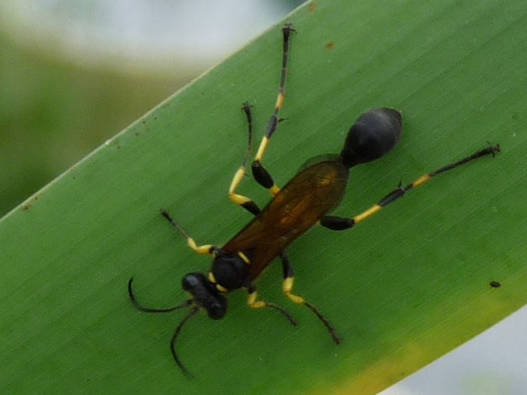

मिट्टी की बर्रMud Dauber Wasp
Sceliphron madraspatanum · Sphecidae · INS-0089

- Scientific name
- Sceliphron madraspatanum (Fabricius, 1804)
- Family
- Sphecidae
- Hindi
- मिट्टी की बर्र
- Local names
- mitti ki barr, mud wasp, mud-building wasp
- Status here
- native
- Movement
- Resident, here all year
- IUCN
- not evaluated
- Review
- audited and independently read
When to look कब देखें
Expected mainly in April, May, June, July, August, September, October, November.
Uses and possibilities उपयोग और संभावनाएँ
Drawn from the documented uses in the profile below, where each is labelled traditional, current or a research lead. All uses →
मिट्टी की बर्र / Mud Dauber Wasp
Sceliphron madraspatanum (Fabricius, 1804) — Sphecidae
मिट्टी की बर्र — घर की दीवार पर मिट्टी का नीला-भूरा घर बनाने वाली बर्र जो मकड़ियों को शिकार करती है। माँ रस्सी जैसा पदार्थ निकालकर छोटे-छोटे पिंड बनाती है, हर पिंड में एक जीवित मकड़ी रख देती है, फिर अंडा देती है। लार्वा तो मकड़ी को खा जाता है। बहुत उपयोगी बर्र, मकड़ियों को नियंत्रण रखती है।
Quick Identification त्वरित पहचान
| Feature | Description |
|---|---|
| Body colour | Black with reddish-brown or yellow markings on the abdomen |
| Size | 18–22 mm long; relatively large wasp |
| Wings | Held parallel to the body (not folded); smoky to dark brown |
| Body shape | Slender, with a long petiole (narrow waist) |
| Head | Large, with prominent compound eyes |
| Legs | Long, reddish-brown or yellow |
| Nest appearance | Tubular mud cells arranged in a cluster or linear arrangement; yellowish-brown to dark brown colour |
| Nest location | Under eaves, on walls, inside buildings; well-protected from rain |
Field tip: Look under the eaves of buildings or on walls for mud nests — clusters of tubular cells made of clay. Watch for a wasp carrying a paralysed spider toward the nest. You will see her enter a cell, place the spider, back out, and seal the cell. The wasp is solitary; multiple nests on the same wall are from different females.
हिंदी — कैसे पहचानें: घर की दीवार पर मिट्टी का नीला-भूरा डिब्बा। लंबी काली बर्र मकड़ी लिए उड़ती दिखेगी। मिट्टी के पिंड में मकड़ी डाल देती है।
Morphology आकारिकी
Biometrics:
| Measurement | Range |
|---|---|
| Adult female body length | 18–22 mm |
| Wingspan | 35–40 mm |
| Male | 15–20 mm |
| Egg | 3–4 mm, whitish |
| Larva | 8–10 mm, whitish, C-shaped |
| Mud cell (individual) | 12–15 mm long, 5–6 mm diameter |
Female: Large, solitary wasp with a long, slender petiole (waist). Colour black with variable reddish-brown or yellow markings on the abdomen, legs, and sometimes the thorax. Compound eyes are large. The female carries mud in her mandibles and uses her legs to construct nests.
Male: Smaller, similar colour, with longer antennae and often more yellow markings. Shorter-lived; does not provision nests.
Larva: White, maggot-like, legless, curved. Lies on the paralysed spider that the mother provides. Consumes the spider over about a week before pupating.
Mud nest: Constructed of clay, shaped as long tubules or pods. Each cell is individually sealed. The colour varies from pale yellow to dark brown, depending on the mud source. The nest can persist for several years if protected from rain and disturbance.
हिंदी: लंबी, काली, पीले निशान। पतली कमर। लार्वा सफ़ेद, मकड़ी पर। घर मिट्टी का।
Behaviour & Ecology व्यवहार और पारिस्थितिकता
Sceliphron madraspatanum is a solitary wasp, meaning that unlike honeybees and ants, each female works alone to build a nest and provision it with food. The female hunts spiders (particularly web-weaving spiders), stings them to paralysis (not death), and places one or more paralysed spiders in a mud cell. She then lays an egg in the cell and seals it. When the larva hatches, it feeds on the fresh, living (but immobilised) spider. This ensures the spider remains nutritious and undecomposed throughout the larva's development.
The wasp emerges from the cell in about 4–5 weeks and immediately seeks mud and spiders to construct its own nest. A female can produce multiple cells, each with its own egg and spider provision. The wasp is entirely non-aggressive toward humans; it stings only spiders and will not attack unless the nest is directly threatened. The sting is described as painful but not medically significant.
The ecological role of mud daubers is substantial: they are major predators of web-weaving spiders and can reduce spider populations significantly in areas with high wasp densities. The paralysed spider provided to the larva is a complete diet. Nest predation by flies (large robber flies) and small beetles is common.
हिंदी: अकेली बर्र, कोई माता-पिता नहीं। मकड़ी को पकड़ती है, सुन्न कर देती है, घर में रख देती है, अंडा दिलवाती है। लार्वा ज़िंदा मकड़ी खाता है। बहुत उपयोगी।
Life Cycle / Phenology जीवन चक्र
| Stage / season | Event |
|---|---|
| Mating | Before nest construction |
| Nest building | Female collects mud and constructs cells over 2–3 days |
| Spider hunting | Wasp captures and paralyses spider; places in cell |
| Egg-laying | Female lays one egg per cell; seals the cell |
| Egg, 3–4 days | Hatches; larva begins feeding on spider |
| Larva, 8–10 days | Consumes the spider; defecates; grows |
| Pupa, 7–10 days | Immobile stage in sealed cell |
| Complete emergence to emergence | 25–35 days depending on temperature |
| April–May | Nests become active as wasps emerge from previous season |
| June–September | Peak activity; multiple generations and nest construction |
| October–November | Activity declines; final generation enters pupation |
| December–March | Pupae in sealed cells; dormant period |
हिंदी: मकड़ी पकड़ो, घर बनाओ, अंडा दो। 25–35 दिन में बाहर। गर्मी-बारिश में सक्रिय। सर्दी में सोया पड़ा रहता है।
Host (Prey) / Diet आहार
Spiders: Specialised predator of web-weaving spiders, particularly:
- Orb-weavers (family Araneidae)
- Sheet-web weavers (family Linyphiidae)
- Cobweb weavers (family Theridiidae)
- Less commonly: jumping spiders, hunting spiders
The wasp shows strong preference for medium-sized spiders (5–10 mm body length).
Predators / Natural Enemies शत्रु
- Robber flies (Asilidae): large flies that intercept wasps in flight
- Cuckoo wasps (Chrysididae): lay eggs in mud dauber nests; parasitoid
- Flies (Diptera): small flies (Sarcophagidae, Bombyliidae) lay eggs in paralysed spiders or in cells
- Parasitoid wasps: Trichophreum and other ichneumonids parasitise larvae
- Ants: scavenge dead wasps and attack emerging females
- Spiders: rarely; some large spiders prey on wasps
- Predatory birds: swallows and other birds occasionally catch flying wasps
Agricultural / Human Relevance कृषि प्रासंगिकता
Biological control agent. Mud dauber wasps are valuable predators of web-weaving spiders. While spiders themselves are beneficial predators of pest insects, an abundance of mud dauber wasps can keep spider populations in check, creating a multi-trophic ecosystem. The wasp's presence indicates a healthy spider population and a diverse insect community.
In human structures:
- Nest management: Mud nests accumulate on buildings and can cause aesthetic concerns. Nests are easily removed (they do not damage the wall) and can be relocated to nearby shelters if protection is desired.
- Coexistence: The wasp is non-aggressive and poses no threat to humans; multiple nests on a building indicate a thriving ecosystem and excellent spider control.
- Research value: Mud daubers are popular subjects in entomological education and behaviour research.
Research direction (a lead, not a result). Efficacy of mud daubers as biological control agents in agricultural settings; preference of different Sceliphron species for particular spider families; nesting ecology and site selection by females; impact of climate change on nest construction and emergence timing.
हिंदी: मकड़ियों को नियंत्रण करता है। घर में नुकसान नहीं। घर की दीवार पर घर बनाता है, दीवार को नहीं नुकसान। स्कूलों में पढ़ाने के लिए अच्छा जीव।
Expected Locally स्थानीय रूप से अपेक्षित
Not a field record. Written from published accounts for eastern Uttar Pradesh. The mud dauber wasp is found throughout India on buildings and structures.
अभी तक स्थानीय पुष्टि नहीं। यह विवरण प्रकाशित स्रोतों से है।
Expected on buildings and structures throughout Basti district during the warm season (April–November), particularly in areas with sheltered eaves and walls. A photograph of the characteristic mud nest on a building wall, with the wasp visible, date, and location, would confirm a local record.
Distribution वितरण
Global range: Tropical and warm regions of Asia; found from the Indian subcontinent to Southeast Asia and extending to Australia and the Pacific.
In India: Throughout the subcontinent; endemic in all regions.
In Uttar Pradesh: Common on buildings in all districts.
In Basti district / eastern UP: Expected on buildings and structures year-round, with highest activity during monsoon months.
Research Questions शोध प्रश्न
Anyone can investigate these | कोई भी इन प्रश्नों की जाँच कर सकता है
- How many spiders does a single mud dauber wasp hunt and provision in her lifetime? / एक बर्र कुल कितनी मकड़ियाँ पकड़ती है? — Observe a female from nest-building to death; count cells.
- Which spider families are most frequently paralysed and used by mud daubers in your area? — Collect paralysed spiders from nests; identify the species.
- How long does it take from egg to adult emergence under different temperatures? / गर्मी और ठंड में कितना समय लगता है? — Maintain nests at different temperatures; record emergence dates.
- Does the mud dauber wasp prefer sheltered locations (under roofs) over exposed walls for nest construction? — Count nests in sheltered vs. exposed locations.
- What are the predators of mud dauber wasps and their eggs/larvae in your area? — Inspect abandoned and infested nests; identify parasites and predators.
Similar Species मिलती-जुलती प्रजातियाँ
| Species | How to tell apart | हिंदी |
|---|---|---|
| Other Sceliphron species (S. laetum, S. assimile) | Slightly different colour and size; similar behaviour and nest structure; difficult to distinguish without expert examination | दूसरी जाति, मिलती-जुलती |
| Potter wasps (Delta, Odynerus) | Smaller (10–15 mm); build different pot-shaped or tubular nests; provision with insects not spiders | कुम्हार बर्र, अलग घर, कीट पकड़ते हैं |
| Other solitary wasps (Trypoxylon, others) | Various sizes and colours; some provision with insects; different nest shapes | दूसरी अकेली बर्रें, अलग शिकार |
Field rule: Large black and reddish wasp constructing clusters of long mud cells under building eaves, hunting spiders: mud dauber wasp.
Taxonomy & Classification वर्गीकरण
Original description. Described by Fabricius in 1804 in Systema Antliatorum as Sphex madraspatanum from specimens collected in Madras (Chennai), India. The genus Sceliphron was erected by Latreille in 1802. Madraspatanum refers to Madras, the type locality.
Subspecies. No subspecies are currently recognised, though populations in different regions show minor colour variation.
Family and order placement. Order Hymenoptera (wasps, ants, bees), family Sphecidae (digger wasps and mud daubers). The genus Sceliphron comprises mud-building wasps of the Old World.
Phylogenetic notes. Sceliphron madraspatanum belongs to a clade of mud-building wasps that specialise on spider hunting. Related species in the same genus show variable prey preferences and geographic distribution.
IUCN status rationale. Not evaluated. As an abundant species with no conservation concerns, no assessment is warranted.
Photo Gallery फोटो गैलरी
Photos needed आवश्यक फोटो
- [ ] Mud dauber wasp carrying spider (मकड़ी लिए उड़ती)
- [ ] Mud nest showing sealed cells (मिट्टी का घर)
- [ ] Wasp entering cell with paralysed spider (शिकार के साथ घर में)
No photos yet — add field photos to media/species/mud_dauber_wasp/ and run node scripts/sync_photos.js.
References संदर्भ
- Fabricius, J.C. (1804). Systema Antliatorum. Brunsvigae. [original description, as Sphex madraspatanum]
- Latreille, P.A. (1802). Histoire Naturelle Générale et Particulière des Crustacés et des Insectes, vol. 3. Paris. [genus]
- Krombein, K.V. (1979). Biosystematic studies of Ceylonese Wasps XII. Sphecidae (Hymenoptera). Smithsonian Contributions to Zoology 300: 1–54.
- Bohart, R.M. & Menke, A.S. (1976). Sphecidae of America North of Mexico: Superfamily Sphecoidea. University of California Press.
- Cervo, R., Cini, A. & Turillazzi, S. (2011). Mud-daubers (Hymenoptera: Sphecidae, Sceliphron species) as predators of spider nests. Biological Control 59(2): 177–184.
- GBIF Occurrence Data — Sceliphron madraspatanum, India (2026).
Source file: species/fauna/insects/mud_dauber_wasp.md